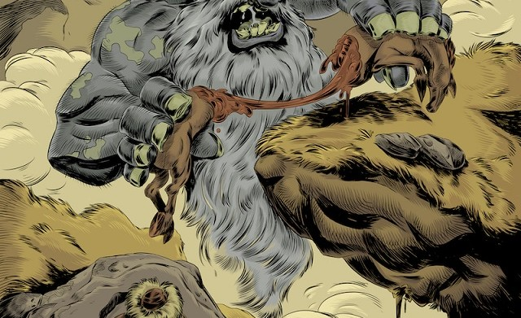

KAYRA HAN
Türk mitolojisinin en yüksek katında yaşayan mutlak yaratıcı ve göklerin efendisidir. İyiliğin kaynağı olarak evrenin düzenini sağlar, Ülgen gibi tanrıların babasıdır ve yeryüzüne "Hayat Ağacı"nı dikerek yaşamı başlatmıştır. Kötülüğün temsilcisi Erlik’i yeraltına hapseden, her şeyin kaderini belirleyen en yüce güçtür.
GÜÇ: EBEDİ NİZAM
ÜLGEN
Kayra Han’ın oğlu ve Türk mitolojisindeki iyilik tanrısıdır. Göğün 16. katında, altın bir sarayda yaşayan Ülgen; güneşin, ayın ve yıldızların koruyucusu, bereketin ve merhametin simgesidir. İnsanları yaratan ve onlara ateşi kullanmayı, yemek pişirmeyi öğreten odur; beyaz elbiseler içinde tasvir edilir ve dualarda iyilik dilemek için kendisine başvurulan en temel güçtür.
GÜÇ: KOZMİK DENGE
ERLİK HAN
Türk mitolojisinde yeraltı dünyasının ve kötülüğün efendisi, karanlık güçlerin başıdır. Kayra Han tarafından yaratılmış ancak kibri ve hırsı yüzünden yeraltına hapsolmuş, orada dokuz oğlu ve dokuz kızıyla birlikte yaşamaya mahkûm edilmiştir. Hastalıkların, talihsizliklerin ve ölümün kaynağı olarak kabul edilen Erlik, siyah bir at üzerinde, elinde yılan şeklinde bir kamçıyla tasvir edilen ve evrendeki dengeyi korumak adına iyiliğin zıttı olan karanlığı temsil eden güçlü bir varlıktır.
GÜÇ: RUH HÜKÜMRANLIĞI
UMAY ANA
Türk mitolojisinde doğumun, bereketin ve hayatın koruyucusu olan en önemli kadın tanrıçadır. Gökten yeryüzüne inen bir ışık huzmesi olarak tasvir edilir ve özellikle hamile kadınları, lohusaları ve henüz savunmasız olan bebekleri kötülüklerden koruduğuna inanılır. Çocukların koruyucu ruhu olan Umay, elindeki gümüş tabağı ve hayat ağacından aldığı bereketle ailelere mutluluk ve bolluk getiren şefkatli bir figürdür.
GÜÇ: KORUMA
MERGEN HAN
Türk mitolojisinde aklın, bilgeliğin ve adaletin tanrısıdır. Kayra Han’ın oğlu ve Ülgen’in kardeşi olan Mergen, göğün yedinci katında yaşar ve her şeyi bilen, her zorluğu çözen üstün zekâsıyla tanınır. Elinde her zaman hedefinden şaşmayan beyaz yayıyla tasvir edilir; attığı okla sadece düşmanları değil, cehaleti ve karanlığı da vuran, insanlara akıl ve strateji veren ilahi bilgedir.
GÜÇ: BİLGELİK
KIZAGAN HAN
Türk mitolojisinde savaşın, gücün ve intikamın tanrısıdır. Kayra Han’ın oğlu olan bu güçlü figür, göğün dokuzuncu katında yaşar ve savaşçıları, orduları, cesur alp’leri koruduğuna inanılır. Genellikle kırmızı bir kaftan giymiş, elinde bir kargı tutan ve kırmızı bir deveye binerken tasvir edilen Kızagan, askerlere zafer ve stratejik güç veren, düşmanı alt etmeyi sağlayan savaşçı ruhun ilahi temsilcisidir.
GÜÇ: SAVAŞ
GÜN ANA
Türk ve Altay mitolojisinde güneşin tanrıçası, sıcaklığın ve yaşam enerjisinin simgesidir. Göğün yedinci katında yaşayan bu yüce varlık, yeryüzündeki tüm canlıları ışığıyla besler, karanlığı ve kötü ruhları kovan en parlak güç olarak kabul edilir. Genellikle altın saçlı, parlayan bir kadın figürü olarak tasvir edilen Gün Ana, Türklerin kadim inançlarında doğurganlığın, adaletin ve aydınlığın kutsal annesi olarak onurlandırılır.
GÜÇ: IŞIK İRADESİ
AY ATA
Türk ve Altay mitolojisinde ayın efendisi olan tanrıdır ve göğün altıncı katında yaşar. Gün Ana’nın eşi veya onun zıt kutbu olarak kabul edilen Ay Ata, geceyi aydınlatan, vakti belirleyen ve insanların uykusunu, huzurunu ve rüyalarını denetleyen koruyucu bir güçtür. Genellikle gümüş bir zırh içinde, parlayan bir erkek figürü olarak tasvir edilir; doğumları müjdelediğine ve özellikle çocuklara şans getirdiğine inanılan bu tanrı, Türk kültüründeki ay döngüsüne dayalı zaman algısının ve gece dinginliğinin kutsal temsilcisidir.
GÜÇ: ZAMAN DÖNGÜSÜ
TULPAR
Türk mitolojisindeki en ikonik varlıklardan biri olan, kanatlı ve efsanevi bir at figürüdür. Genellikle beyaz veya doru bir renkte tasvir edilen Tulpar, sadece çok güçlü kahramanlar ve alp'ler tarafından binilebilen, rüzgârdan hızlı koşan ve gökyüzünde uçabilen bir sadakat sembolüdür. En önemli özelliklerinden biri kanatlarının kimse tarafından görülmemesi gerekmesidir; inanışa göre eğer birisi Tulpar'ın kanatlarını görürse, atın gücünü kaybedeceğine veya öleceğine inanılır. Manas Destanı gibi pek çok kadim anlatıda kahramanın en yakın yoldaşı olan bu at, hızı, zekası ve sahibine olan bağlılığıyla Türk destan kültüründeki "ideal binek" kavramını temsil eder.
GÜÇ: SONSUZ SÜRAT
TEPEGÖZ
Türk mitolojisinin ve Dede Korkut hikâyelerinin en korkutucu figürlerinden biri olan, alnının ortasında tek bir gözü bulunan devasa bir yaratıktır. Bir su perisi ile bir çobanın birleşmesinden doğan bu canavar, vücuduna hiçbir silahın işlemediği büyülü bir deriye sahiptir ve insan etiyle beslenmesiyle bilinir. Hikâyelerde genellikle hem bir trajedi hem de saf kötülük unsuru olarak yer alan Tepegöz, sonunda kahraman Basat tarafından, tek zayıf noktası olan gözünden vurularak alt edilen, Türk destanlarındaki dev ve canavar tipolojisinin en güçlü örneğidir.
GÜÇ: YIKIMIN GÖZÜ
ŞAHMERAN
Şahmeran, yılanların şahı olan, belinden yukarısı insan, aşağısı yılan şeklinde tasvir edilen bilge bir varlıktır. Yerin altında yılanlarıyla birlikte yaşayan, tıp ve gelecek bilgisini elinde bulunduran bu efsanevi figür, sadakati ve bilgeliği temsil eder. İnsanoğlunun ihaneti sonucu öldürülse de şifasını ve sırlarını miras bırakan Şahmeran, Anadolu kültüründe bereketin simgesi olarak yaşatılır.
GÜÇ: ŞİFA
ALKARISI
Türk halk inancında lohusa kadınları ve yeni doğmuş bebekleri hedef alan, "al basması"na neden olan kötücül bir dişi varlıktır. Dağınık saçlı, çirkin ve korkunç bir dev görünümünde tasvir edilen bu varlığın, kurbanlarının ciğeriyle beslendiğine ve onları nefessiz bıraktığına inanılır. Demir eşyalardan, tüfek sesinden ve kırmızı renkten korktuğu için, yüzyıllardır lohusaları korumak adına yastık altına makas konulması veya başa kırmızı kurdele bağlanması gibi geleneklerin temel kaynağını oluşturur.
GÜÇ: KARABASAN
KÜBEY HANIM
Kübey Hanım, Türk mitolojisinde hayat ağacı Bayterek’in içinde yaşayan, doğumu ve neslin devamlılığını simgeleyen koruyucu bir tanrıçadır. Belinden aşağısı ağaç gövdesi, yukarısı ise ışık saçan bir kadın olarak tasvir edilen bu varlık, hamile kadınlara doğum sırasında güç verir ve yeni doğan bebekleri korur. Göksel bir "Süt Gölü"nden getirdiği yaşam suyunu çocuklara sunduğuna inanılan Kübey Hanım, Türk inancında dişiliğin, doğanın verimliliğinin ve varoluşun en kutsal annelik figürlerinden biridir.
GÜÇ: HAYAT
SU İYESİ
Türk mitolojisinde akarsuların, göllerin ve pınarların koruyucu ruhu olan kutsal bir varlıktır. Genellikle beyaz tenli, yosun saçlı ve bazen balık kuyruklu bir formda tasvir edilen bu iye, suyun temizliğini ve bereketini denetler. İnsanların suları kirletmesine veya saygısızca kullanmasına öfkelendiğine inanıldığı için, kadim geleneklerde suya girmeden önce ondan izin istemek ve "destur" çekmek, doğaya duyulan saygının ve Su İyesi'ni hoşnut tutma çabasının bir sembolüdür.
GÜÇ: HİDRO-MANSİ
ARÇURA
Türk ve Çuvaş mitolojisinde ormanların koruyucu ruhu ve devleşen bir doğa varlığıdır. Genellikle çok uzun boylu, her yeri kıllarla kaplı, iki vücutlu (önü ve arkası aynı) ve bazen üç kollu ya da üç bacaklı olarak tasvir edilen bu korkutucu ruh, ormana giren yabancıları şaşırtıp yollarını kaybettirmesiyle bilinir. En karakteristik özelliği insanları gıdıklayarak öldürmesidir; kurbanlarını yakaladığında onları kahkahalar atana kadar gıdıklar. Ancak Arçura, "tersine" hareket eden bir mantığa sahip olduğu için, ona karşı cesur duran veya zekice hileler yapan kişilerin elinden kurtulmanın mümkün olduğuna inanılır.
GÜÇ: ÖLÜMCÜL KAHKAHA
BOZKURT
Türk mitolojisi, destanları ve devlet geleneğinde bağımsızlığın, cesaretin ve yol göstericiliğin en temel sembolüdür. Türklerin zor zamanlarında ortaya çıkarak onlara rehberlik eden bu kutsal varlık, özellikle Göktürklerin türeyiş efsanelerinde (Bozkurt ve Ergenekon Destanları) soyun devamlılığını sağlayan ana figürdür. Gök yeleli bu kurt, hürriyetine düşkünlüğü ve teşkilatçı yapısıyla Türk savaşçılığını ve asaletini simgeler; bu nedenle tarih boyunca pek çok Türk devleti tarafından bayraklarda, paralarda ve amblemlerde bir güç nişanesi olarak kullanılmıştır.
GÜÇ: GÖKSEL REHBERLİK
YELBEĞEN
Türk ve Altay mitolojisinde yer alan, genellikle yeraltı dünyasında veya karanlık ormanlarda yaşayan, çok başlı ve devasa bir canavardır. Ejderha ile dev arası bir varlık olarak tasvir edilen Yelbegen’in baş sayısı efsaneye göre üç, yedi veya dokuz olabilir; her başı koptuğunda yerine yenisinin çıktığına inanılır. Erlik Han’ın hizmetinde olan bu korkunç yaratık, ay ve güneş tutulmalarına sebep olan, kurbanlarını yutan ve geçtiği yerlere yıkım getiren kaotik bir güçtür. Destanlarda genellikle kahraman alp’lerin gücünü ve cesaretini kanıtlamak için dövüştüğü, alt edilmesi en zor engellerden biri olarak karşımıza çıkar.
GÜÇ: KOZMiK KARANLIK
GULYABANİ
Gulyabani, ıssız yerlerde ve mezarlıklarda yaşayan, vücudu tüylerle kaplı, devasa ve korkunç bir yaratıktır. Gece yolcularını korkutup yollarından saptırması ve insan eti yemesiyle bilinen bu varlık, genellikle ters ayaklı olarak tasvir edilir. Halk efsanelerinde karanlığın ve ıssızlığın getirdiği dehşeti simgeleyen Gulyabani, edebiyat ve sinemadaki yorumlarıyla Türk kültürünün en tanınmış hortlak figürlerinden biri haline gelmiştir.
GÜÇ: DEHŞET SİSİ
OD ANA
Türk ve Altay mitolojisinde ateşin koruyucu tanrıçası ve ocağın kutsal annesidir. Her evin ocağında yaşadığına inanılan bu varlık, aileyi kötülüklerden koruyan, sıcaklık ve bereket veren en temel kutsal güçlerden biridir. Genellikle kırmızı elbiseler giymiş, yaşlı ve saygın bir kadın olarak tasvir edilir; ateşi temiz tutanlara huzur, ateşe saygısızlık edenlere (ateşe tükürmek veya söndürmek gibi) ise uğursuzluk getirdiğine inanılır. Türk kültüründeki "ocak" kavramının dokunulmazlığı ve kutsallığı, doğrudan Od Ana’ya duyulan hürmetten kaynaklanır.
GÜÇ: PİROKİNEZİ
BASAT
Basat, bir aslan tarafından büyütülen ve aslan pençeli olarak betimlenen efsanevi bir Dede Korkut kahramanıdır. Halkına musallat olan tek gözlü dev Tepegöz’ü zekası ve cesaretiyle öldürerek toplumunu büyük bir yıkımdan kurtarmıştır. Türk destan geleneğinde vahşi doğanın gücüyle insan zekasını birleştiren yenilmez "alp" figürünü temsil eder.
GÜÇ: ALP ERDEMİ